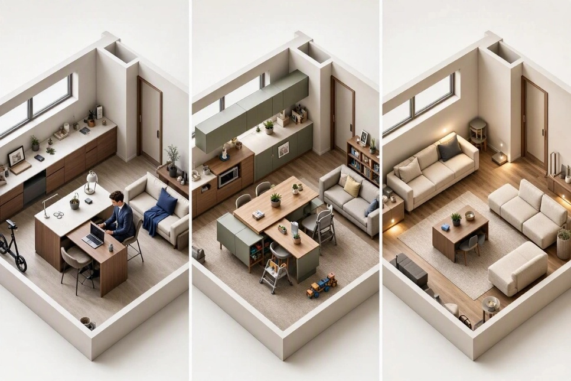

TAYACRAFT
居家空間魔術師
「如果你的家，是一款持續更新的遊戲...?」
結合大雅廚具頂尖的鋁合金擠型與高精密木工製造能量，開創「模組化空間長效訂閱服務 (Space-as-a-Service)」。以預埋結構軌道與快拆工藝取代敲牆泥作，讓居住空間隨人生階段自由擴充升級。

MODULAR TRACK ARCHITECTURE · 跨世代空間演進打破一次性裝修定型 ──空間隨人生章節自由擴充演進
打破傳統裝修一次性買斷的線性消費模式，建立「模組化空間長效訂閱服務 (Space-as-a-Service)」。以年輕世代熟悉的「遊戲 DLC 擴充包」為設計隱喻，底層結合大雅廚具高精度預埋鋁合金軌道工藝，讓居家空間隨家庭成長動態解鎖、終身相伴。
將你的家視為一個擁有「永續 DLC 擴充能力」的動態服務載體 ── 以輕量化模組取代沈重泥作，隨人生階段自主解鎖最合適的空間形態。
STARTER DLC
25 ~ 40 歲 ─ 建立生活（職住混合／彈性社交）
- 隱藏壁掛工作桌（居家辦公模組）
- 抽屜伸縮中島（多功能社交吧檯）
- 垂直收納料理牆（高效烹飪體驗）
FAMILY DLC
40 ~ 65 歲 ─ 家庭轉換（多代共生／育兒換裝）
- 複合延伸中島（家庭共享料理核心）
- 頂天立地動態滑軌櫃（高密度收納）
- 成長型彈性分隔牆（照護支持模組）
LIFE+ DLC
65 歲以上 ─ 樂齡安老（全齡無障礙／在地老化）
- 夜間動線引導（智慧感應安全扶手）
- 人因防撞導角護套（居家跌倒防護）
- 緊急照明與水電安全快切模組
虛實融合接觸點：VR 沉浸式預覽與 3D 即時模擬
落實服務科學線上線下（O2O）全通路體驗：消費者在官網透過 3D 空間配置引擎自主探索與預算試算，亦可至大雅廚具實體門市配戴 VR 設備，1:1 沉浸式體驗 25歲、40歲、65歲不同人生階段的空間尺度與動線，在決策初期即達成「零認知落差」的服務承諾。
格局不動，需求隨世代轉折 ──25歲到65歲的居住空間實證診斷
每個年齡層都有截然不同的居住需求，但傳統住宅往往只為「買房裝修那一刻」的自己而設計，導致空間逐漸與生活脫節。

25~40歲 ─ 建立生活階段
⚠ 傳統居住痛點
- 居住空間小，需在家工作但缺乏專用區域
- 生活型態多變，空間功能卻固定不變
- 想招待朋友卻空間不足，料理體驗受限
✦ Starter DLC 解決方案
- 隱藏式工作桌 ─ 隨需展開的專業工作區
- 社交模式切換 ─ 空間一鍵轉換為聚會模式
- 智慧料理模組 ─ 讓小廚房也能有大餐體驗
40~65歲 ─ 家庭轉換階段
⚠ 傳統居住痛點
- 家庭成員增加，共用空間需求提升
- 物品隨年齡增加，收納空間嚴重不足
- 開始需要照護家中長輩，空間缺乏無障礙設計
✦ Family DLC 解決方案
- 家庭共享中島 ─ 多功能互動核心區域
- 彈性收納系統 ─ 隨需擴充的模組化收納
- 照護友善模組 ─ 無障礙動線與安全配置
65歲以上 ─ 樂齡生活階段
⚠ 傳統居住痛點
- 行動力下降，居家安全風險增加
- 獨居比例上升，需要更智慧的生活輔助
- 不想離開熟悉的家，但現有空間不適合老化需求
✦ Life+ / Safe DLC 解決方案
- 夜間安全照明 ─ 感應式動線引導燈光
- 智慧安全監測 ─ 跌倒偵測與緊急通報
- 便利生活模組 ─ 一鍵操控的居家系統
「新世代缺的可能不是更大的家，而是更有彈性、更適合每一階段自己的家。」
拆牆清運不是唯一的路 ──傳統泥作木工固化小宅生活機能
傳統居家空間在泥作與木工完成後便完全定型，每當家庭結構改變，屋主就得面臨「將就忍耐」或「打掉重練」的兩難。
左右拖曳滑桿：見證「傳統雜物堆積」vs「TAYA 鋁軌模組上牆」的坪效解放
空間功能固定僵化
一間房間只能有一種用途，無法根據遠距工作、聚會或照護需求靈活切換。
廚房偏向單一功能導向
傳統廚房僅被視為封閉烹飪區，忽略了跨世代家庭互動、共煮與社交的可能。
裝修完成後難以改變
傳統裝修一旦完工就定型，敲牆翻新不僅耗時數月，更伴隨高昂清運費與廢棄物。
「核心痛點：家的物理結構，無法跟著居住者的人生階段自由演進。」
預埋鋁合金基底滑軌 ──免動泥作的實體模組裝配工藝
將傳統耗時數月的現場泥作改裝，革新為標準化的「工業級預製裝配系統」。透過陽極氧化 6063-T6 雙工字結構滑軌、隱蔽式水電匯流槽與重力自鎖卡扣，達成 ±0.5mm 精密咬合，讓大型家具與安全輔具皆可在 30 分鐘內無塵快拆升級。
四階段服務創新旅程：從數位摸索到終身循環
打破傳統家具「單次買斷、售後斷聯」的線性模式，大雅廚具藉由「線上 3D 摸索 ➜ 門市 VR 體驗 ➜ 30 分鐘無塵裝配 ➜ 10 年後殘值回收」的端到端服務藍圖，建立陪伴住戶 40 年的雙向信任服務旅程。
線上 3D 摸索與預算試算
使用者於線上自選坪數格局，拖曳試裝 20+ 款 DLC 模組，即時檢驗空間動線衝突與生活 Combo 加成，秒級生成透明工程物料清單。
數位孿生空間資料庫、全自動化 BOM 報價與工廠預排料引擎。
門市 VR 與實體五金卡扣體驗
顧客前往實體展示中心，配戴 VR 沉浸體驗跨世代居住尺度，並親手操作大雅 6063-T6 滑軌與 Snap-Fit 自鎖卡扣的紮實咬合手感。
大雅全台實體展廳展示架構、認證空間規劃顧問 1:1 諮詢服務。
師傅 30 分鐘無塵快速裝配
專業技師攜帶預製模組到府，30–45 分鐘內透過重力自鎖滑軌快裝完成，0% 敲牆泥作、零粉塵噪音，水電快接即插即用，當日完工即刻入住。
大雅高精密預製廠 ±0.5mm 公差控制、標準化工序排程派工系統。
10 年後舊模組殘值回收整新
10 年後家庭迎來新成員或樂齡需求，系統主動推薦升級方案。專人到府無痛拆換舊件並折抵高達 30% 殘值，大幅降低換裝門檻。
大雅逆向物流回收系統、原廠工廠整新再製檢驗線、次級循環租賃平台。

核心技術：大雅製造優勢的數位與工程延伸
出題企業實體製造能量的全新維度：大雅廚具具備全台頂尖的鋁合金擠型、板金加工與高精密木工製造能量。預埋軌道正是大雅實體製造優勢的數位延伸 ── 透過工業級 ±0.5mm 公差控制，家具模組能在預埋鋁滑軌上滑動、咬合與快拆，徹底免除傳統裝修打牆破壞與粉塵噪音。
牆體模組內部無縫整合隱蔽式水電匯流槽與重力自鎖安全卡扣，更串接「逆向物流與回廠整新機制」，讓工作桌、料理中島、收納櫃到樂齡安全扶手，在跨越 40 年的生命週期中皆可無縫相容、原廠回收整新再利用。
預埋雙向鋁合金滑軌
採用高強度陽極氧化鋁合金雙工字力學結構，結合牆體主骨幹配置，提供穩定支撐與抗震韌性。
隱蔽式水電與感測匯流槽
軌道內部整合安全弱電照明迴路、電源通道與預留給排水快接介面，模組扣上即可連動供電與照明。
重力輔助自鎖安全卡扣
採用 Snap-Fit 斜面導引與防脫安全插銷，模組掛入軌道即自動咬合鎖定，大幅縮短現場換裝時間。
標準化生命週期 DLC 介面與逆向物流
統一跨世代接口規格，串聯大雅「舊模組殘值折抵回收」與「逆向物流回廠整新機制」，讓大雅從傳統單次廚具買斷轉型為全生命週期空間服務商。
四大 DLC 模組解鎖 ＆ 3D 軌道卡扣拆解互動模型
直接點擊下方任一 DLC 擴充卡，即可切換 3D 模型、拖曳旋轉視角或展開「3D 結構爆炸圖」：
WORK DLC · 隱藏壁掛折疊工作桌
展開即變身人體工學獨立工作檯，附設雙螢幕支架與閱讀燈，收起僅佔牆面厚度 8cm。
提示：可在左側 3D 模型上按住滑鼠左右拖曳旋轉視角，或點擊「3D 結構爆炸圖」檢視內部軌道構造。
3D 實時空間配置驗證 ──親手裝配升級每一段人生模組
支援「畸零格局／輕隔間／材質分區／水電插座」、「20+ 款 3D 主題家具（電競RGB、公仔展示櫃、掃地機器人、貓跳台）」、「二手拍賣＆盲盒」、「動線測試＆空間 Combo 加成」與「估價單匯出」。
空間裝潢估價單 ＆ 3D 配置截圖

全生命週期價值閉環 ──住戶、品牌與環境永續的三方共贏
TAYACRAFT 透過「大雅高精密軌道基底 ＋ 跨世代 DLC 空間模組 ＋ 逆向物流回廠整新」，將傳統線性消費模式轉化為「模組化空間長效訂閱服務 (Space-as-a-Service)」，創造住戶、大雅廚具與環境永續的三方共贏閉環。
極致坪效與動態生涯適配
破除單一用途格局限制，以模組快拆消除裝修壁壘，小宅每坪空間均可隨遠距辦公、親子共融與樂齡安老靈活轉換，生活坪效極大化。
CLV 顧客終身價值延展
顛覆「10~15 年單次交易即斷聯」的產業痛點；藉由 DLC 模組隨需升級、逆向物流殘值折抵與二手租賃，創造高頻次二次營收，大幅提升大雅顧客終身價值 (CLV)。
循環減廢與無痛在地老化
局部換裝免打牆，大幅削減裝修廢棄物與碳排；長者原居地無痛加裝安全輔具，落實 WHO 在地老化（Aging-in-Place）社會永續承諾。
30年居住生命週期：傳統裝修 vs. TAYACRAFT 成本與 ESG 效益對照
以新婚成家、育兒轉換與樂齡安老三階段進行情境模擬，比較傳統拆除重做與 TAYACRAFT 軌道模組升級的長期差異：
傳統線性一次性裝潢 (Linear Model)
每隔 10~15 年全面打牆拆除重做 · 售後即斷聯無任何循環價值- 泥作打牆施工次數 3 次大規模拆除施工
- 施工受災停擺天數 270 天 (需外宿租屋)
- 裝修固體廢棄物 24.0 噸營建廢料
- 品牌與顧客關係 單次買斷，交易完成即斷聯
TAYACRAFT 模組化長效空間服務 (Space-as-a-Service)
初期高精密基底鋪設 ＋ DLC 隨需快拆升級 ＋ 逆向物流殘值折抵- 模組換裝更換次數 0 次打牆（2 次快拆升級）
- 施工更換受災天數 僅 1.5 天（單次 30~45 分鐘極速無塵換裝）
- 材料廢棄率降低 減廢 74%（舊模組回廠整新）
- 大雅 CLV 顧客終身價值 從單次 15 萬擴展至 30~40 年持續服務營收

封閉式循環經濟：逆向物流與回廠整新閉環 (Closed-Loop System)
結合大雅廚具強大的原廠製造、品質檢驗與木工重工能量，打造全台首座住宅模組封閉式循環供應鏈。透過舊模組殘值折抵與逆向物流，讓高品質建材與五金結構持續創造商業與生態雙重價值：
- 01 空間隨需升級：住戶因應新婚、育兒或樂齡轉換，線上 3D 模擬確認後選購新版 DLC 模組
- 02 逆向物流回收：專業車隊到府無塵拆卸舊模組並折抵殘值，啟動逆向物流回運大雅原廠工廠
- 03 大雅原廠整新：經原廠嚴格結構檢驗、安全應力測試、面材修復與清潔消毒，達新品出廠標準
- 04 次級市場租賃：整新模組以優惠租賃或二手方案提供年輕租屋族與小資家庭，創造多元循環營收